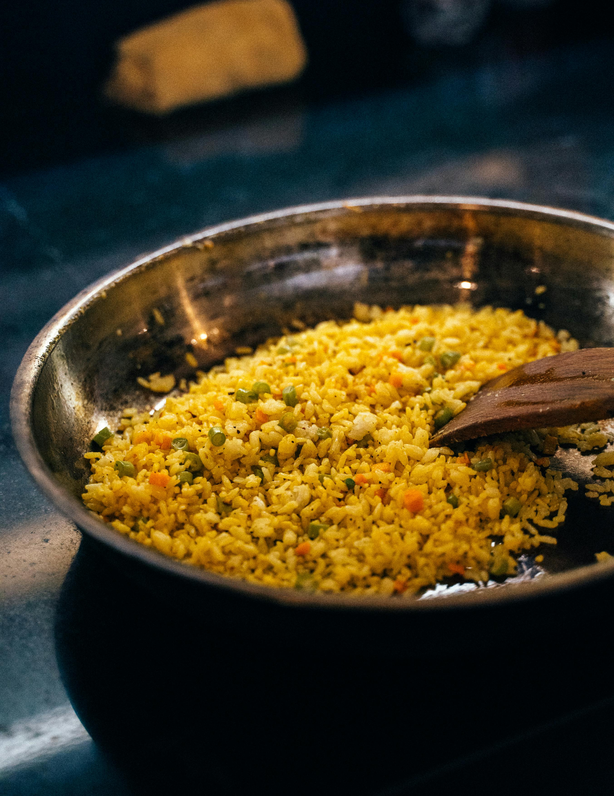

fried_rice

Home
discription
Fried rice is a stir-fried rice dish popular in East and Southeast Asian cuisines.
It's typically made with cooked rice, eggs, vegetables, and often meat or seafood, all stir-fried in a wok or pan. The dish can be customized with a wide variety of ingredients and is often used to incorporate leftovers
ingredients
- ⅔ cup chopped baby carrots
- ½ cup frozen green peas
- 2 tablespoons vegetable oil
- 1 clove garlic, minced, or to taste (Optional)
- 2 large eggs
- 3 cups leftover cooked and chilled white rice
- 1 tablespoon soy sauce, or more to taste
- 2 teaspoons sesame oil, or to taste
steps
- Heat 1 tbsp oil in wok; add chopped onions and stir-fry until onions turn a nice brown color, about 8-10 minutes; remove from wok
- Allow wok to cool slightly
- Mix egg with 3 drops of soy and 3 drops of sesame oil; set aside
- Add 1/2 tbsp oil to wok, swirling to coat surfaces; add egg mixture; working quickly, swirl egg until egg sets against wok; when egg puffs, flip egg and cook other side briefly; remove from wok, and chop into small pieces
- Heat 1 tbsp oil in wok; add selected meat to wok, along with carrots, peas, and cooked onion; stir-fry for 2 minutes
- Add rice, green onions, and bean sprouts, tossing to mix well; stir-fry for 3 minutes
- Add 2 tbsp of light soy sauce and chopped egg to rice mixture and fold in; stir-fry for 1 minute more; serve
- Set out additional soy sauce on the table, if desired